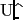

Next: monte_carlo.initial_values Up: The list of functions Previous: monte_carlo.create_data Contents Index
Function for calculating parameter errors from the Monte Carlo simulations.
monte_carlo.error_analysis(self, run=None, prune=0.0)
run: The name of the run.
prune: Legacy argument corresponding to `trim' in Art Palmer's Modelfree program.
Parameter errors are calculated as the standard deviation of the distribution of parameter values. This function should never be used if parameter values are obtained by minimisation and the simulation data are generated using the method `direct'. The reason is because only true Monte Carlo simulations can give the true parameter errors.
The prune argument is legacy code which corresponds to the `trim' option in Art Palmer's Modelfree program. To remove failed simulations, the eliminate function should be used prior to this function. Eliminating the simulations specifically identifies and removes the failed simulations whereas the prune argument will only, in a few cases, positively identify failed simulations but only if severe parameter limits have been imposed. Most failed models will pass through the pruning process and hence cause a catastrophic increase in the parameter errors. If the argument must be used, the following must be taken into account. If the values or parameters of a run are calculated rather than minimised, the prune argument must be set to zero. The value of this argument is proportional to the number of simulations removed prior to error calculation. If prune is set to 0.0, all simulations are used for calculating errors, whereas a value of 1.0 excludes all data. In almost all cases prune must be set to zero, any value greater than zero will result in an underestimation of the error values. If a value is supplied, the lower and upper tails of the distribution of chi-squared values will be excluded from the error calculation.
For proper error analysis using Monte Carlo simulations, a sequence of function calls is required for running the various simulation components. The steps necessary for implementing Monte Carlo simulations are:
1. The measured data set together with the corresponding error set should be loaded into relax.
2. Either minimisation is used to optimise the parameters of the chosen model, or a calculation is run.
3. To initialise and turn on Monte Carlo simulations, the number of simulations,  , needs to be set.
4. The simulation data needs to be created either by back calculation from the fully minimised model parameters from step 2 or by direct calculation when values are calculated rather than minimised. The error set is used to randomise each simulation data set by assuming Gaussian errors. This creates a synthetic data set for each Monte Carlo simulation.
5. Prior to minimisation of the parameters of each simulation, initial parameter estimates are required. These are taken as the optimised model parameters. An alternative is to use a grid search for each simulation to generate initial estimates, however this is extremely computationally expensive. For the case where values are calculated rather than minimised, this step should be skipped (although the results will be unaffected if this is accidentally run).
6. Each simulation requires minimisation or calculation. The same techniques as used in step 2, excluding the grid search when minimising, should be used for the simulations.
7. Failed simulations are removed using the techniques of model elimination.
8. The model parameter errors are calculated from the distribution of simulation parameters.
Monte Carlo simulations can be turned on or off using functions within this class. Once the function for setting up simulations has been called, simulations will be turned on. The effect of having simulations turned on is that the functions used for minimisation (grid search, minimise, etc) or calculation will only affect the simulation parameters and not the model parameters. By subsequently turning simulations off using the appropriate function, the functions used in minimisation will affect the model parameters and not the simulation parameters.
An example, for model-free analysis, which includes only the functions required for implementing the above steps is:
relax> grid_search(`m1', inc=11) # Step 2.
relax> minimise(`newton', run=`m1') # Step 2.
relax> monte_carlo.setup(`m1', number=500) # Step 3.
relax> monte_carlo.create_data(`m1', method=`back_calc') # Step 4.
relax> monte_carlo.initial_values(`m1') # Step 5.
relax> minimise(`newton', run=`m1') # Step 6.
relax> eliminate(`m1') # Step 7.
relax> monte_carlo.error_analysis(`m1') # Step 8.
An example for reduced spectral density mapping is:
relax> calc(`600MHz') # Step 2.
relax> monte_carlo.setup(`600MHz', number=500) # Step 3.
relax> monte_carlo.create_data(`600MHz', method=`back_calc') # Step 4.
relax> calc(`600MHz') # Step 6.
relax> monte_carlo.error_analysis(`600MHz') # Step 8.